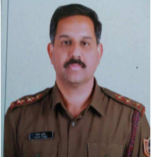

- Hindi Natak evam Ekanki
- Hindi Upanyas
- Hindi A - B. Com.

Dr. Sanjay Kumar
Assistant Professor (Hindi) & Associate NCC Officer

Contact Details
-
Address
- House No. 4, Type 4, National Institute of Plant Genome Research, Aruna Asaf Ali Marg, New Delhi-110067
-
Phone
- Office: 011-24112557
- Residence: 011-26735146
- Mobile: 9868411540
-
Email
- Sanjayrladu73@gmail.com
Education
Career Profile
- L.L.B. Delhi University, Delhi 2012
- M.M.C. (Mass Communication) G.J.U. Hisar 2008
- Ph.D. Hindi M.D.U. Rohtak 2004
- M.B.A. (Marketing) M.D.U. Rohtak 1997
- M.A. Hindi M.D.U. Rohtak 1995
- Assistant Professor in Ram Lal Anand College since February 2002
Education
Career Profile
Subjects Taught
Conference Organization & Special Lectures
- Special Lecture: "Abhinay aur Sampreshan" (Performance and Communication) - 18th April 2016, Prof. Ramesh Gautam, Delhi University
- Educational Tour: BJMC Students to Nehru Memorial Museum & Library, National Museum, United News of India - 16th March 2016
- Special Lecture: "Swatantrta Aandolan me Patrakarita ki Bhumika" (Role of Journalism in Independence Movement) - 12th March 2016, Dr. Vineeta Gupta, Maharaja Agresen Institute
- Documentary Screening: "Kalam ka Sipahi" & "Payame Azadi" - 12th March 2016
- Special Lecture: "Kabeer Aakhin Dekhi" - 8th March 2016, Dr. Yamini Gautam, Maitrey College
- Special Lecture: "Patrakarita ke Badhte Aryam" (Changing Dimensions of Journalism) - 7th October 2015, Dr. Anand Pradhan, IIMC
- Special Lecture: "Media ki Bhasha" (Language of Media) - 14th October 2015, Prof. Naresh Mishra, Former HOD, MDU
- Workshop: "Radio Programming" - 8, 10, 17th October 2015, Dr. Rajni Mudgal
- Workshop: "Documentary Making" - 16 & 30 October 2015, Mr. Sushil Yati
- Special Lecture: "Hasya Kavita & Kavya Path" (Comedy Poetry) on Hindi Divas - Mr. Arun Jaimini
Area of interest
Administrative Assignments
Areas of Interest / Specialization
- Natak (Drama)
- Mass Communications
- NCC Activities
Administrative Assignments
- Active participation in multiple committees as Convener, Co-Convener and Member
- Deputy Superintendent of Examinations
- Associate NCC Officer
Publications Profile
Books
- Kumar Sanjay, Edited (2014), 'Acharya Baldev Raj Shant-Samkaleenoki Drishti me', Sahtiya Sanchay, Delhi
- Kumar Sanjay, Sole Author (2010), 'Bhartendu Harishchandra ke Sahitya me Vyangy Vidhan', Sahitya Sansthan, Delhi
- Kumar Sanjay, Co-Author (2006), 'Shabad Vivek', Anang Prakashan, Delhi
Chapters
- Sanjay Kumar Sharma (2016), 'Bhartendu ke Natako main rashtriye Chetna', pp.104, Natakaar Bhartendu Nai sandharb: nai Vimarsh, Edited by Prof Ramesh Gautam
- Kumar Sanjay (2016), 'MatraBhasha: sashakt Bhasha', pp 142, Rashtrye Anterrashtreye Gyan aurjan ka Setu, Edited by Dr. Vijaya Tomar
- Sanjay Kumar (2014), 'Jansanchar, Jansamaj, Janmadhyam', pp 164, Internet yug mein mudrit madhymo ki stithi aur chunouti, Edited by Dr. Neelam Rathi
Research Papers
- Kumar Sanjay (June-Aug., 2016), 'Devendra Sharma: Indra ke geeton main Samvednatmak Mulye', Drishta Research Journal
- Kumar Sanjay (Oct. 2015), 'Cinema, Samaj aur Bhartiya Nari', International Journal of Multidisciplinary Research, Vol. IV
- Kumar Sanjay (May-July 2015), 'Rashmi Bajaj ki Kavitawo mein Jeevan-Darshan', Hindu, Vol. 7
- Kumar Sanjay (April-June 2015), 'Mratyormaji Jeevanma Gammyam mein Nari Chitran', Pramana, Issue 16
- Kumar Sanjay (April-June 2015), 'Vartamanyug mein RamcharitManas mein Maanveey Mulyon ki Prashingkta', VidyaVimarsha, Vol. 3
- Kumar Sanjay (June 2015), 'Mulyaparak Shiksha aur Samaj', Swadeshi, Vol. 9-10
- Kumar Sanjay (Jan.-March 2015), 'Bhartendu ke Kavya mein Samajik aur Rajneetik Vyangy', VidyaVimarsha, Vol. 2
- Kumar Sanjay (March 2015), Rashmi Bajaj kiKratiyon me SamajikChetna, ‘International Journal of Multidisciplinary Reserch’, Vol. III
- Kumar Sanjay (Nov.2014-Feb.2015), BhartendukeKavya par pariveshkaprabhav, ‘Hindu’, Vol. 5
Research Projects
- Research Project 1: Dr Rakesh Kumar Gupta, Dr Salome John, Dr Sanjay Kumar Sharma, Mr Rajender Singh - "Potable water in Delhi and NCR – Assessment of quality, resources and remediation" (2013-2014), Delhi University
- Research Project 2: Dr Rakesh Kumar Gupta, Dr Vandana Gupta, Dr Sanjay Kumar Sharma - "Dissemination of Antibiotic Resistance among Airborne Bacteria and its Public Health Implications" (2015-2016), Delhi University
Research Guidance
- Balmukund Gupta kaSahityaaur Hindi Navjagran’ Regn.date 7.11.2014, Amit Kumar (Delhi University, Delhi)
Other Activities & NCC Service
- Attended Combined Annual Training Camp at 7 Delhi BN NCC, Gp. HQ, Safdurjang Enclave, 13-22 June 2016 (IInd International Yoga Day)
- Attended Combined Annual Training Camp at 7 Delhi BN NCC, Gp. HQ, Safdurjang Enclave, 16-25 October 2015
- Attended Combined Annual Training Camp at 7 Delhi BN NCC, Gp. HQ, Safdurjang Enclave, 13-22 June 2015 (Ist International Yoga Day - Group Leader at Rajpath, India Gate, Delhi)
- Attended Combined Annual Training Camp at NDMC Navyug School Sarojininagar, 2-11 January 2014
- Attended National Integration Camp at Visakhpatnam, 15-26 December 2007
- Attended National Integration Camp at Leh, 19-30 July 2006
- Attended National Integration Camp at Changanacherry-Kerala, 22 December 2005 - 2 January 2006
- Attended Combined Annual Training Camp at 7 Delhi BN NCC, Gp. HQ, Safdurjang Enclave, 23 Sep